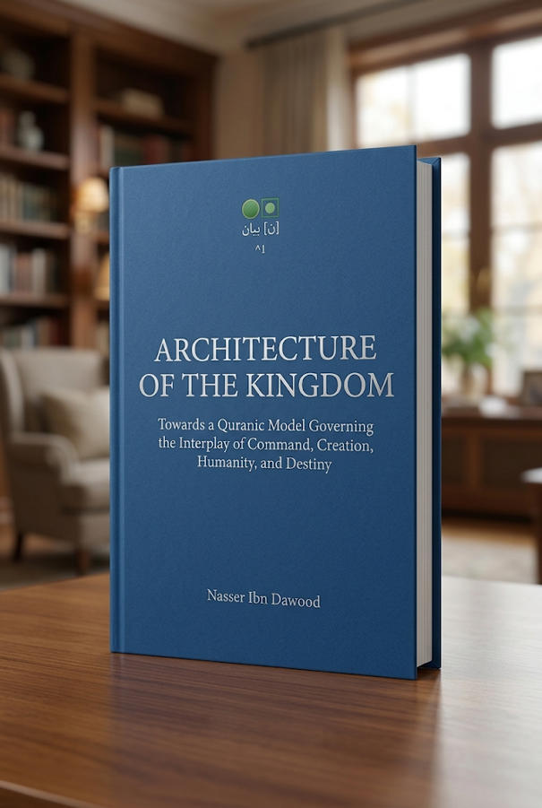

Nasser Ibn Dawood

Text extracted from the author-supplied Word edition; consult the original source.
Preparing the reader…
ARCHITECTURE OF THE KINGDOM
Towards a Quranic Model Governing the Interplay of Command, Creation, Humanity, and Destiny
A Project in the Architectural Reading of the Quran: An inductive, functional framework governing the transition from text to structure, relationship, action, and ultimate destiny.
By: Nasser Ibn Dawood
Front Matter
I. The Global Knowledge Manifesto
Knowledge is a universal right. The author firmly believes that wisdom should not be locked behind paywalls or language barriers.
Global Access Policy: All books in this library are available for free in multiple digital formats (PDF, HTML, DOCX , TXT).
The Digital Library: As of early 2026, the collection hosts 68 volumes (34 in Ar abic and 34 in English), fully optimized for AI-assisted research and digital archiving.
Official Platforms :
Main Website: nasserhabitat.github.io/nasser-books/
GitHub: nasserhabitat/nasser-books
II. Translator's Note: The Bridge of Meanin g
This English edition is a condensed conceptual adaptation. It is not a word-for-word translation, but rather an "extraction of essence." It presents the core philosophical framework in accessible English, omitting the exhaustive linguistic debates and classical references found in the original Arabic text .
For the academic researcher: The original Arabic version remains the primary source for comprehensive linguistic analysis, detailed exegesi s (Tafsir), and the complete bibliography.
Executive Overview: The Conceptual Architecture
The Architecture of the Kingdom ( Ma'mariyat al-Malakut ) offers an inductive, system-level framework for reading the Quranic text. Rather than treating scripture solely through linear commentary or isolated theology, this model extracts the underlying functional dynamics connecting Divine Command, cosmic creation, human moral agency, and ultimate outcome.
The framework operates on four foundational pillars:
The Divine Command & Actuation ( Amr & Kun ): The non-material, instantaneous initiation of cosmic order and law.
The Domain of Creation ( Khalq & Sunan ): The physical and systemic environment operating under predictable, observable patterns ( Sunan ).
Human Agency & Moral Responsibility ( Kasb & Taklif ): The localized domain of choice, where human action creates real-world impacts and ethical traces.
Ultimate Destiny & Accountability ( Jaza' & Shahadah ): The exact alignment between accumulated earthly actions and final existential outcomes.
Core System Dynamics
[ Divine Command (Amr) ]
│
▼
[ "Be" (Kun) - Actuation Point ]
│
▼
[ Creation & Natural Laws (Khalq & Sunan) ]
│
▼
[ Human Choice & Action (Taklif & Kasb) ] ──► [ Trace & Record (Ithbat) ]
│ │
└───────────────► [ Judgment (Hisab) ] ◄───┘
│
▼
[ Outcome (Jaza') ]
Key Theoretical Modules
1. The Separation of Text and Model[H]